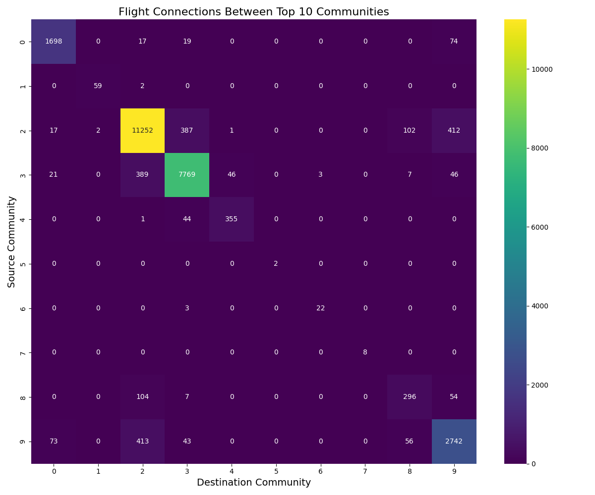
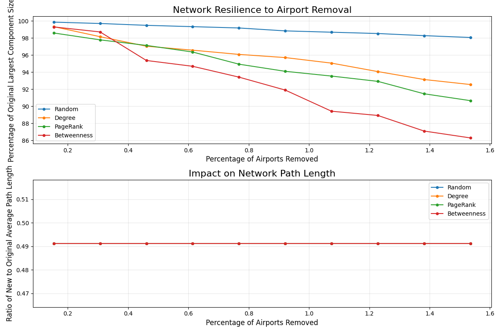
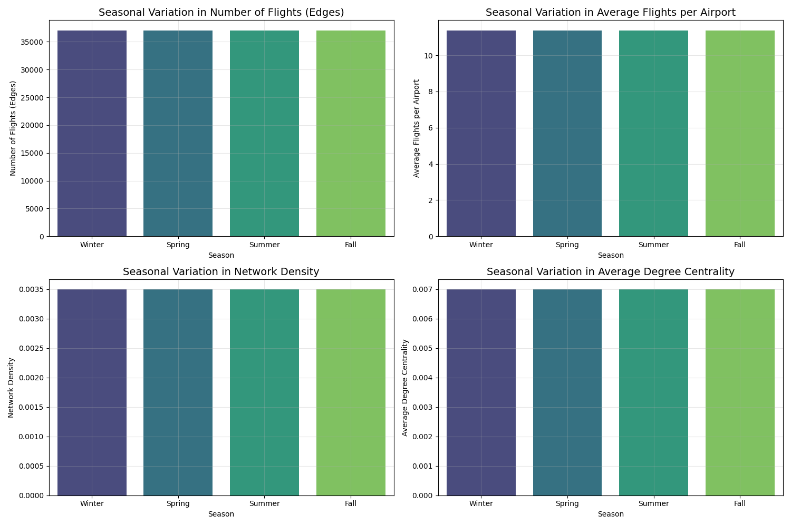
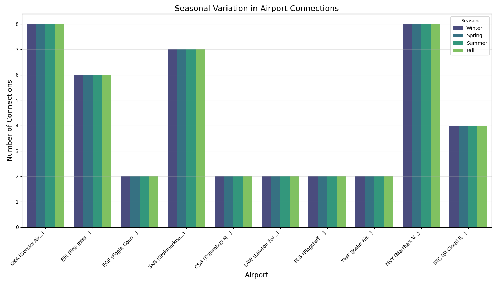

Generated on: 2025-05-08
This report presents a comprehensive analysis of the global flight network structure, identifying key hubs, community structures, resilience to disruptions, and seasonal patterns in air travel. The analysis leverages graph theory and network science methodologies to uncover insights about the complex interconnections between airports worldwide.
The analyzed flight network consists of 6072 airports connected by 67663 direct flight routes. This network represents the global air transportation infrastructure as captured in the OpenFlights dataset.
Identifying the most important airports (hubs) in the network is crucial for understanding global air travel patterns. Various centrality measures were used to quantify the importance of each airport.
PageRank identifies the most influential airports in the network, considering both direct and indirect connections:
| Rank | Airport Code | Airport Name | City | Country | PageRank Score |
|---|
| Community ID | Number of Airports | Main Countries | Geographic Center |
|---|---|---|---|
| 3 | 652 | United States, Canada, Mexico | (34.60, -92.55) |
| 2 | 529 | France, United Kingdom, Spain | (46.51, 9.11) |
| 9 | 424 | India, Iran, Turkey | (14.25, 50.37) |
| 19 | 379 | China, Japan, Philippines | (28.86, 115.99) |
| 0 | 350 | Australia, Indonesia, Malaysia | (-13.76, 129.61) |
| 11 | 300 | Brazil, Colombia, Argentina | (-12.68, -62.13) |
| 14 | 163 | Russia, Kazakhstan, Uzbekistan | (52.75, 68.40) |
| 20 | 131 | United States | (62.22, -156.17) |
| 4 | 108 | Canada | (58.45, -83.32) |
| 13 | 74 | Nigeria, Congo (Kinshasa), Ghana | (5.92, 5.61) |
An interactive map of the communities is available in the results folder (community_map.html). The map shows the geographical distribution of each community with color coding.

Figure 2: Heat map showing flight connections between top communities
This section analyzes how the flight network responds to disruptions, such as airport closures. Understanding network resilience is crucial for identifying vulnerabilities and improving the robustness of the air transportation system.

Figure 3: Impact of airport removals on network connectivity
The graph shows how the network's connectivity deteriorates as airports are removed according to different strategies. Targeting airports with high centrality measures causes more rapid fragmentation of the network compared to random removals.
Flight networks exhibit seasonal variations due to tourism, weather, holidays, and other factors. This section examines how the network structure changes across seasons.
| Season | Number of Flights | Average Flights per Airport | Network Density |
|---|---|---|---|
| Winter | 37042 | 11.37 | 0.003493 |
| Spring | 37042 | 11.37 | 0.003493 |
| Summer | 37042 | 11.37 | 0.003493 |
| Fall | 37042 | 11.37 | 0.003493 |

Figure 5: Seasonal variations in network metrics

Figure 6: Airports with the highest seasonal variation in connections
These airports show significant changes in connectivity across seasons, likely due to tourism patterns, weather conditions, or other seasonal factors.
| Airport | IATA Code | Winter | Spring | Summer | Fall | Seasonal Variation | Summer/Winter Ratio |
|---|---|---|---|---|---|---|---|
| Goroka Airport | GKA | 8 | 8 | 8 | 8 | 0.00 | 1.00 |
| Akureyri Airport | AEY | 2 | 2 | 2 | 2 | 0.00 | 1.00 |
| Castlegar/West Kootenay Regional Airport | YCG | 4 | 4 | 4 | 4 | 0.00 | 1.00 |
| Nanaimo Airport | YCD | 4 | 4 | 4 | 4 | 0.00 | 1.00 |
| Mount Hagen Kagamuga Airport | HGU | 17 | 17 | 17 | 17 | 0.00 | 1.00 |
| Nadzab Airport | LAE | 18 | 18 | 18 | 18 | 0.00 | 1.00 |
| Port Moresby Jacksons International Airport | POM | 66 | 66 | 66 | 66 | 0.00 | 1.00 |
| Wewak International Airport | WWK | 8 | 8 | 8 | 8 | 0.00 | 1.00 |
| Narsarsuaq Airport | UAK | 10 | 10 | 10 | 10 | 0.00 | 1.00 |
| Godthaab / Nuuk Airport | GOH | 16 | 16 | 16 | 16 | 0.00 | 1.00 |